What “original” buyers usually want
- Documented German / European bloodlines
- Compact, athletic structure
- Strong but proportional head
- Confident family companion temperament
- Natural guarding with an off-switch
- Health testing you can actually verify

How to find classic German type for a family companion and guardian — not the oversized, odd-looking modern bulk flooding the market.
01 — The problem
Bigger heads. Heavier bone. Shorter muzzles. More bulk, less athlete. If you want the old dog, you have to shop on purpose.
Search “Rottweiler puppy” long enough and the feed fills with dogs that barely resemble the breed’s working roots. Some are genuinely impressive animals. Many are simply oversized, overdone, or selected for a look that photographs tough and ages poorly.
The original Rottweiler was a German drover and butcher’s dog: compact, powerful, mobile, and steady. Strong enough to work. Balanced enough to live with. Serious enough to guard a home without needing a cartoon skull or 160 pounds of mass.
This guide is for buyers who want that older idea of the dog as a family companion and natural guardian — with real obedience training — and who are willing to ignore the giant-American pet-mill aesthetic.
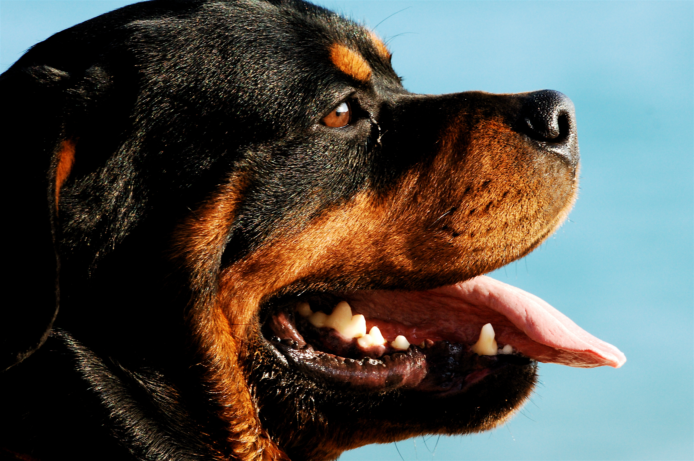
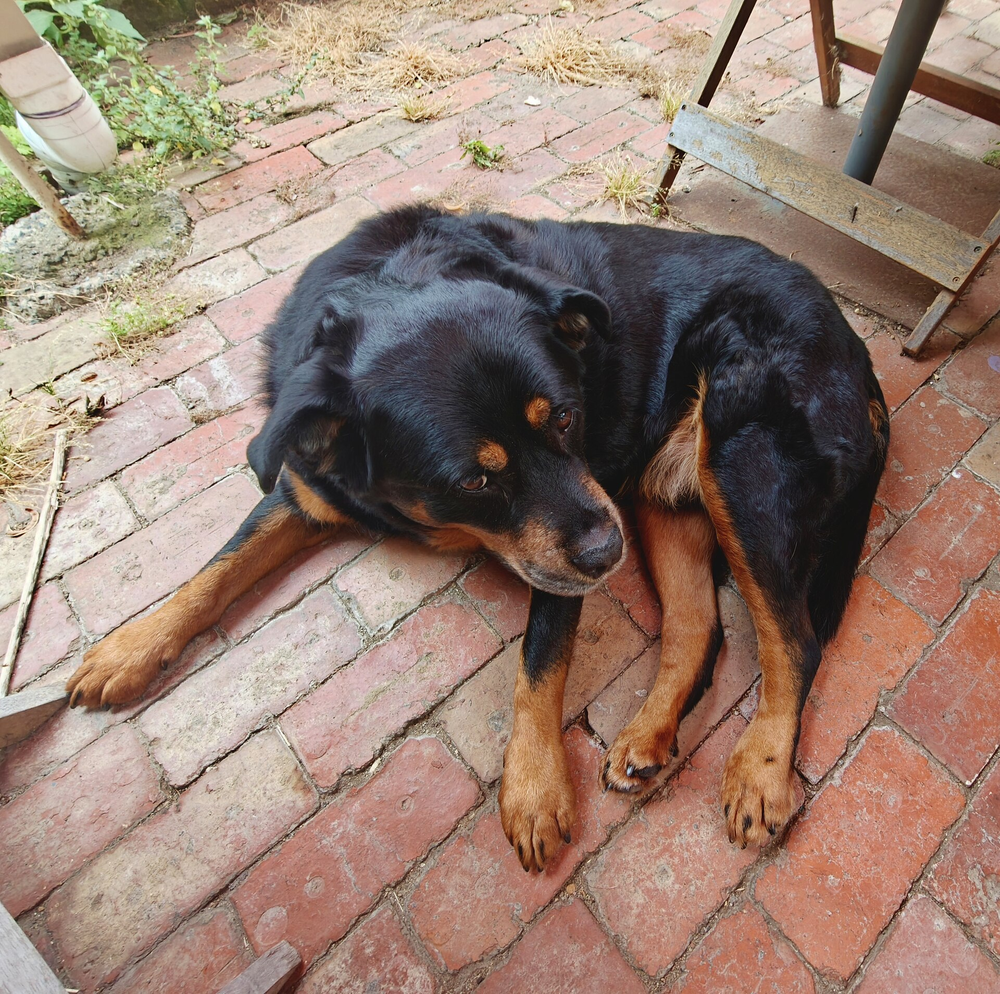
02 — Type
Use the FCI / ADRK idea of the dog as your compass: a working dog that can still move.
Not a breed-standard drawing — a reminder. Classic stays mobile. Fashion gets heavy.
Males are generally in the mid-20-inch range. The goal is correct proportion and movement — not novelty giantism.
| Piece | Target | Red flag |
|---|---|---|
| Male height | Roughly 24–27 in. German standards treat the mid-range large dog as correct — not endless upward creep. | Sold mainly as enormous / “XXL guardian.” |
| Condition | Hard, athletic, substantial without being a brick. | Soft bulk, loose skin, no movement video. |
| Head type | Strong and proportional. Muzzle has real length and fill. | Short face, extreme stop, overdone wrinkle. |
| Selection culture | ADRK / FCI / serious European-influenced programs. | “German lines” with no papers and no tests. |
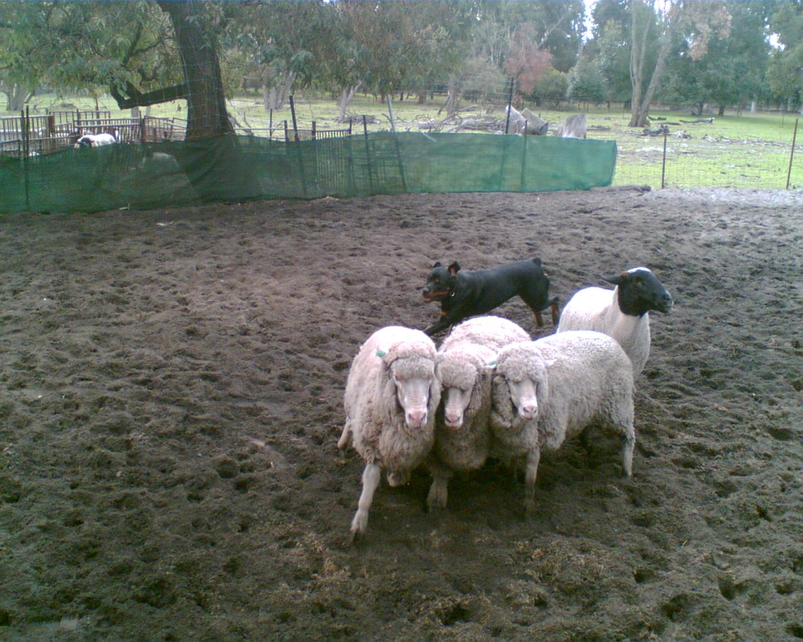


03 — Language of the breed
Titles and clearances are a map. Adjectives on a sales page are weather.
HD-A / HD-FreiGerman hips clear. US parallel: OFA Excellent / Good.
ED-0 / ED-FreiElbows clear. US: OFA Normal elbows.
JLPP N/NDNA clear for a known Rottweiler neurological risk. Prefer clear parents.
ZTPGerman breed suitability evaluation — structure, type, temperament, drive.
BSTUSRC Breed Suitability Test — conformation plus character elements.
BHBasic temperament and obedience bar. A useful minimum signal in serious lines.
IGP I–IIIReal sport titles. Fine in parents; pure sport intensity may be more dog than a pet home wants.
KS / V1Klubsieger = major ADRK specialty winner. V1 = Excellent, first in class under FCI-style judging.
AhnentafelOfficial ADRK pedigree. Often carries titles and health notations.
ADRKGerman parent club. Still the home-court standard for the breed.
USRCUS club culturally closer to FCI/ADRK thinking than pure pet-show shopping.
OFAPublic database for hips, elbows, and more. If they claim it, look it up.
04 — Where to start looking
Not a purchase order. A shortlist of German-type oriented programs with public websites you can study yourself. Adults first. Papers second. Puppies last.
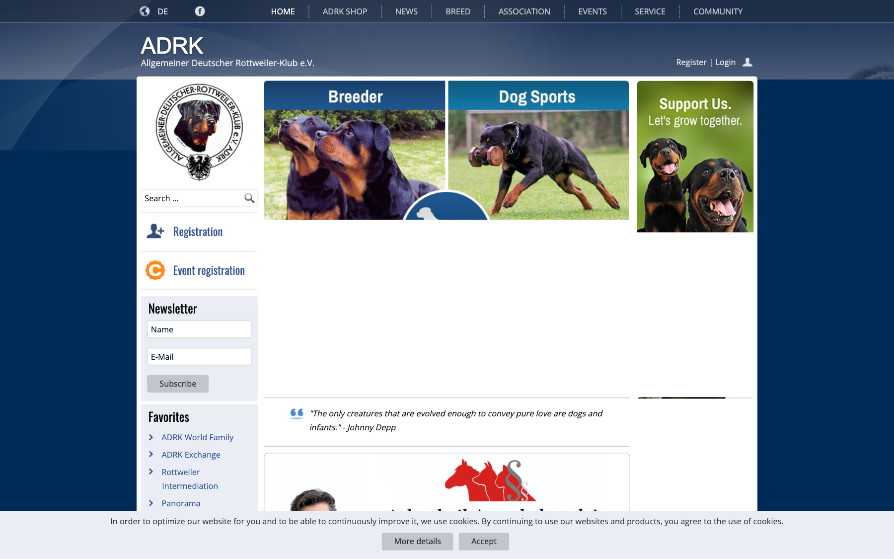
Home club for the breed. Use the breeder directory when you want the purest paper trail and are open to import logistics.
adrk.de · Breeder directory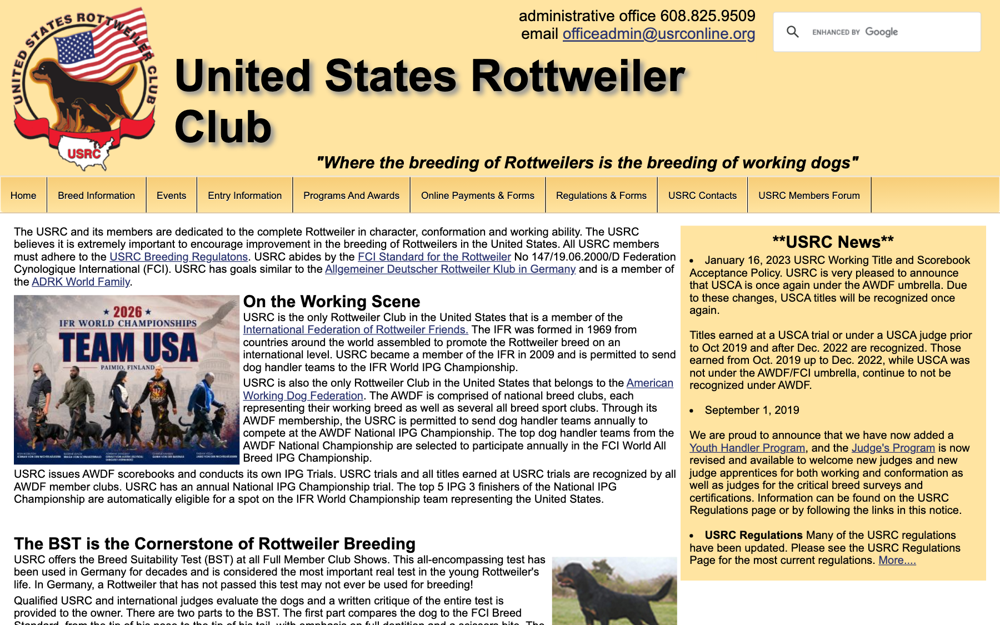
FCI/ADRK-minded US club culture: breed suitability testing, working events, and better referrals than random Facebook litters.
usrconline.org · Member clubs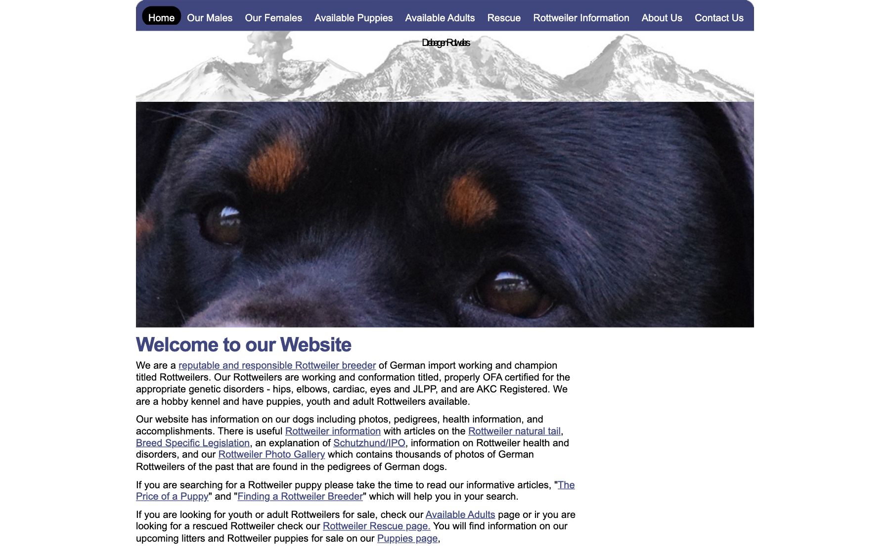
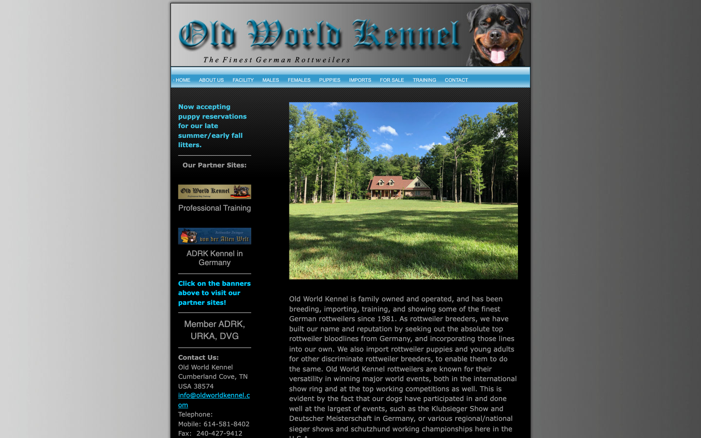
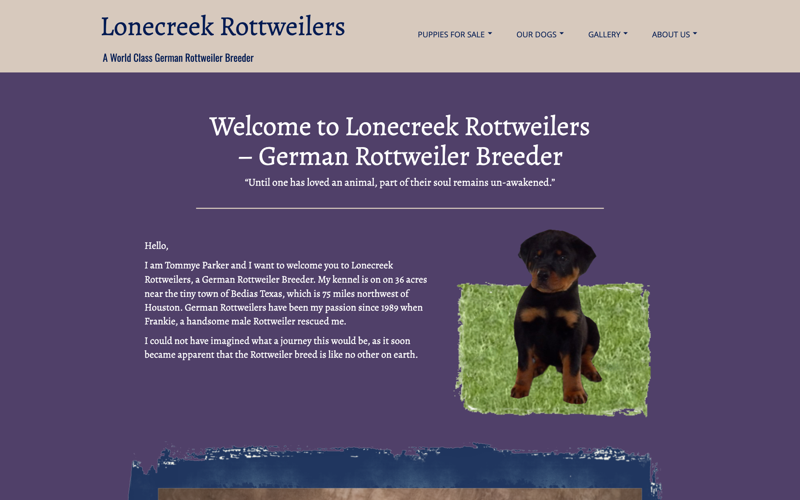
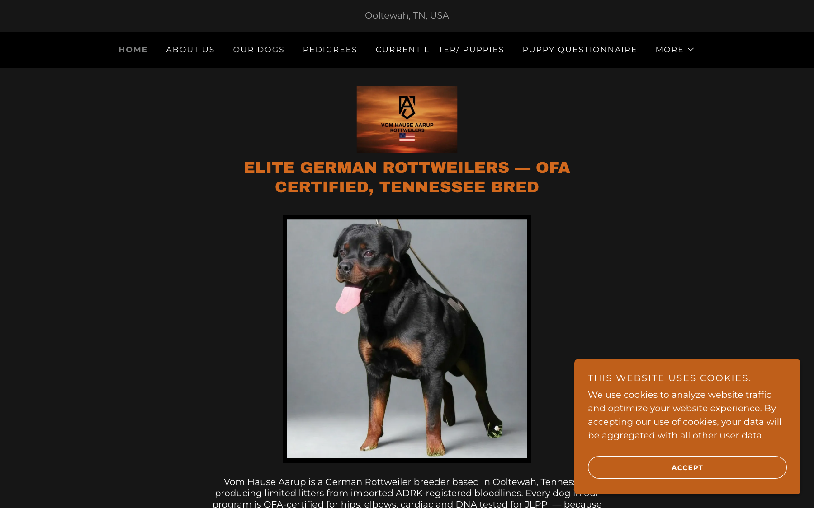
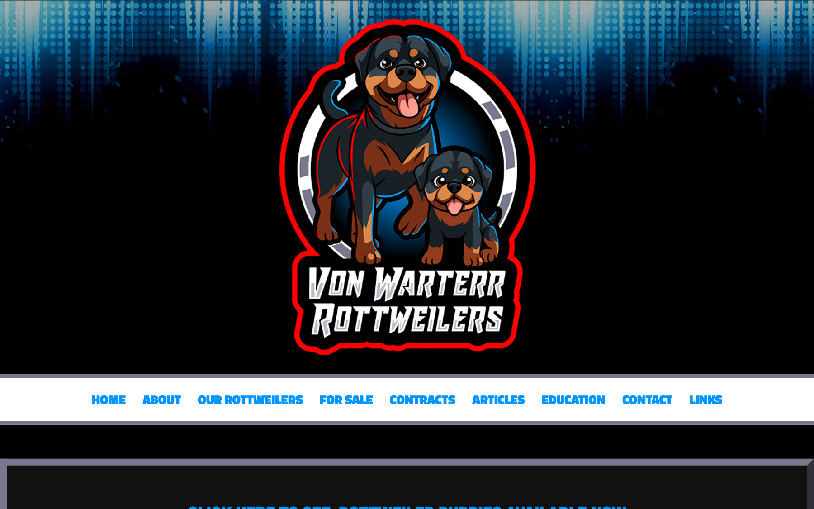
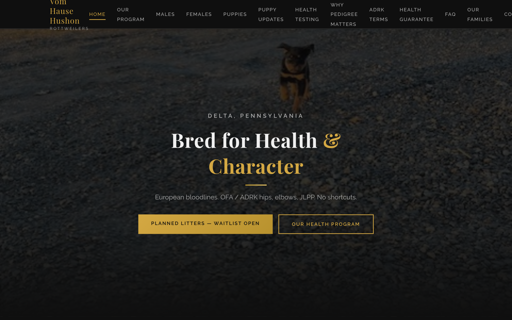
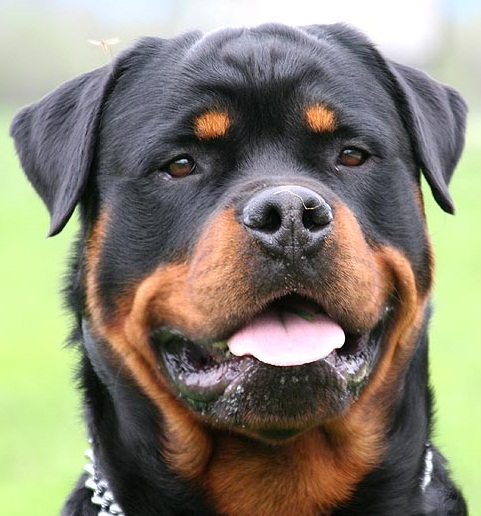

05 — Process
Slow is an advantage. Type is decided on adults, not on eight-week fluff.
06 — Hard passes
| Skip | Why |
|---|---|
| Facebook “giant German” litters | Usually the bulk/type drift you are trying to escape, with thin paperwork. |
| “#1 USA / ship worldwide / deposit today” | Volume marketing over selection — even when the copy says “import bloodlines.” |
| No verifiable hips, elbows, or JLPP | Non-negotiable on this breed. |
| Rare colors or long coat as features | Wrong priorities for classic type. |
| Only pet papers, zero European/working story | Different selection culture than original German type. |
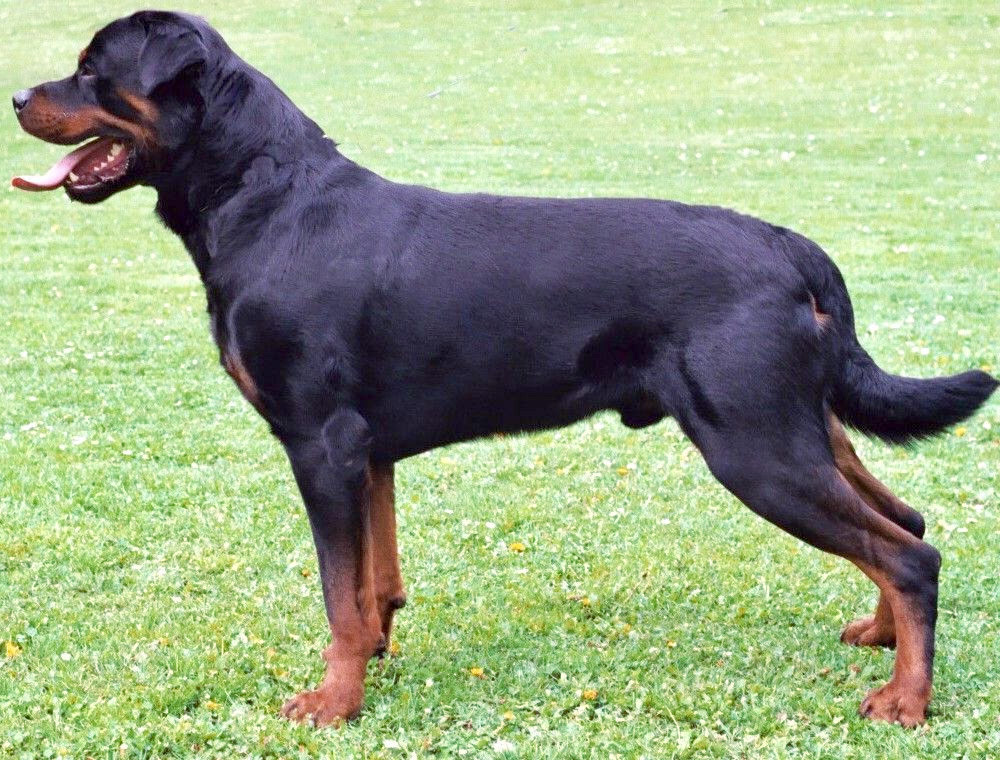
07 — Desk references